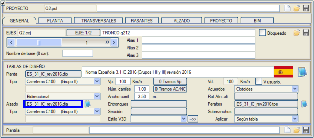
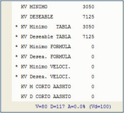
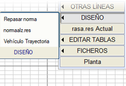
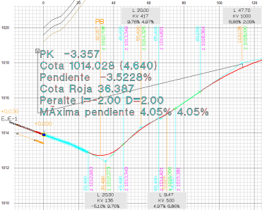

| |
|
KIRMIZI KOT: YÖNETMELİK UYGULAMASI (.dia TABLOLARI)
|
Boykesit tabloları, her projede uygulanabilir geometrik standartlara uyulmasını sağlayan bir dizi parametre ve veri tablosu belirten dosyalardan oluşur. Boykesit tablosu, her eksene GENEL sekmesinden atanır: 
Bu dosyalar veya boykesit tabloları .dia uzantısına sahiptir ve herhangi bir metin düzenleyici ile düzenlenebilir. Karayolları Talimatı 3.1IC'nin 2016 revizyonunda (şu anda yürürlükte olan) yer alan yönetmelik, program kütüphanesindeki ES_31_IC_rev2016.dia tablosuna karşılık gelir. Ayrıca kütüphanemizde, Karayolları 3.1IC yönetmeliklerinin 2015 (ES_31_IC_rev2015.dia) ve 2001 (ES_31IC_rev2001.dia) revizyonlarına karşılık gelen tablolar da bulunmaktadır. Genel olarak, bu tablolar aşağıdaki verilerden oluşur:
Programda .dia tablolarının kullanımı [N] tuşuna basıldığında, GENEL sekmesinden eksene atanan .dia boykesit tablosundaki verilere göre, Kv'sine veya uzunluğuna bağlı olarak hesaplanan minimum ve istenen düşey kurp değerlerini içeren bir iletişim kutusu açılır. Kullanılan değerler (tabloya göre hesaplanan çoklu değerlerden) bir yıldızla (*) vurgulanır. Tasarım tabloları, daha sonra görüleceği gibi, tanımlanan kırmızı kotu kontrol etmek için de kullanılır. Kısa düşey kurpların hesaplanması için koşulun karşılanmadığı, eğim değişikliğinin olmadığı veya son eleman olduğu bölgelerde, Kv değerleri sıfır olarak görünecektir. Düşey kurp 'uzunluğa göre' etkinleştirildiğinde, sunulan değerler Kv'yi değil, uzunluğunu temsil edecektir. Kısa düşey kurplar (Amerikan AASHTO yönetmeliği), genel formülün düşey kurp uzunluğu duruş mesafesinden küçük ancak proje hızına eşit bir uzunluktan büyük olduğunda hesaplanır. Bu değer aralığında, bu yönetmelik kullanılarak daha kısa düşey kurplar elde edilir. Öte yandan, mevcut bir tanımı analiz etmek ve belirlenen geometrik minimumlarla mevcut sapmaları bildirmek için kullanılırlar. [TASARIM] seçeneğine tıklandığında, aşağıdaki seçenekleri içeren bir menü açılır:
Mevcut eksende bir .dia tablosu yüklü olduğunda, duruş mesafesini elde etmemizi sağlar. Kırmızı Kotlar menüsünün Bilgi Ekranında, duruş mesafesiyle Gözlemci-Nesne çizgisi çizilir, bu da düşey kurpların basitleştirilmiş bir görüş mesafesi analizi yapmayı sağlar. 
|